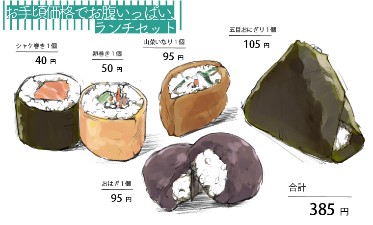
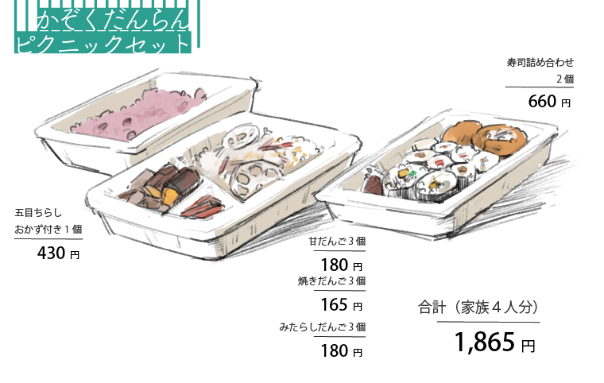

東村山の市民に愛されるこのお店は、お客様のニーズに合わせて種類が豊富だ。
和菓子とご飯類、すべて合わせると総勢９０種類・お弁当を入れると１００種を超える。
東村山に住む人々がこのお店を利用することを想定し、2つの場面別にセットメニューを作った。
いとう屋には、和菓子だけでなく、お昼ごはんにぴったりの商品が勢ぞろいしている。どれも手作りで食べごたえがあるのに、お値段はお手頃だ。
食費を節約したいときや、月末にお財布が寂しくなったとき、お金をかけず、しかしおいしいお寿司をお腹いっぱい食べたい人にオススメのメニューが、いとう屋で全てそろう。
会社のお昼休みにはぜひ「お手頃価格でお腹いっぱい！ランチセット」にして、お買い求めして欲しい。
いつも忙しくても、休日はピクニックなど、家族でのお出かけが楽しみなはず。でも、朝早起きして、お弁当を作るのは大変だ。
そんなとき、ぜひ利用して欲しいのが、駐車場完備のいとう屋である。休日も朝７時から営業している店では、あそんだあとにお腹いっぱい入る主食や、子供の大好きな甘味まですべて取り扱っている。
みんなでつまんだお寿司やはんぶんこしたお団子は、家族の大切な思い出の味になるだろう。